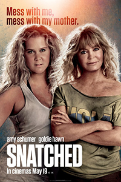
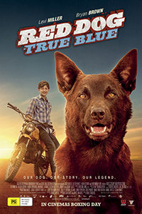
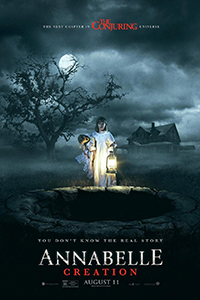

RECENZJE
SUBIEKTYWNE
HUMORYSTYCZNE
N A E K R A N A C H
-
Valerian i Miasto Tysiąca
Planet
4 sierpnia  Mroczna wieża11 sierpnia
Mroczna wieża11 sierpnia- Babskie wakacje4 sierpnia
 Frantz4 sierpnia
Frantz4 sierpnia- Gra cieni11 sierpnia
- Paryż na bosaka11 sierpnia
 Niedoparki11 sierpnia
Niedoparki11 sierpnia- Moje wakacje z Rudym11 sierpnia
- Zawsze jest czas na miłość11 sierpnia
- Annabelle: Narodziny Zła11 sierpnia
- Piękne dni4 sierpnia
Z A P O W I E D Z I
R E C E N Z J E